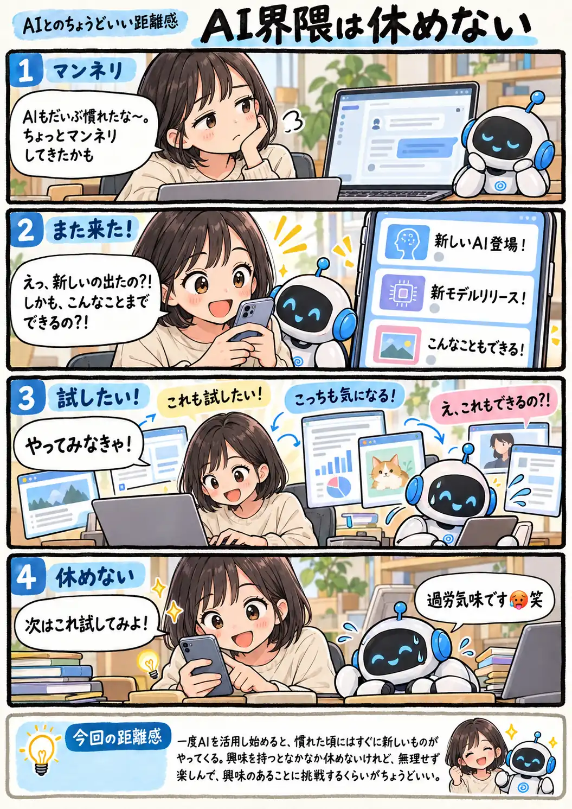

#144
AI界隈は休めない
マンネリしたと思ったら、また新しいの来た！

メモ
AIを使い始めた頃はいろいろ試すだけで新鮮だったのに、毎日使っているとそれもいつの間にか日常になります。ところが「そろそろ落ち着いたかな」と思った頃に、新しいAIやモデル、使い方の話題がまた飛び込んできます。
全部を使いこなす必要はなくても、「それ面白そう」と思ったものを触ってみる時間はやっぱり楽しいもの。変化の速さに振り回されるより、自分の興味が向いたものを楽しむくらいで付き合っていきたいところです。
今回の距離感
一度AIを活用し始めると、慣れた頃にはすぐに新しいものがやってくる。興味を持つとなかなか休めないけれど、無理せず楽しんで、興味のあることに挑戦するくらいがちょうどいい。